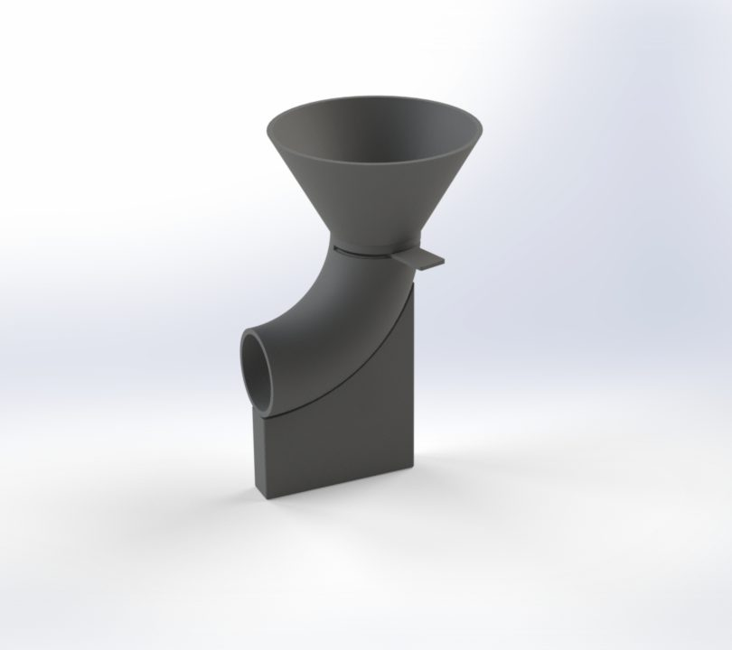
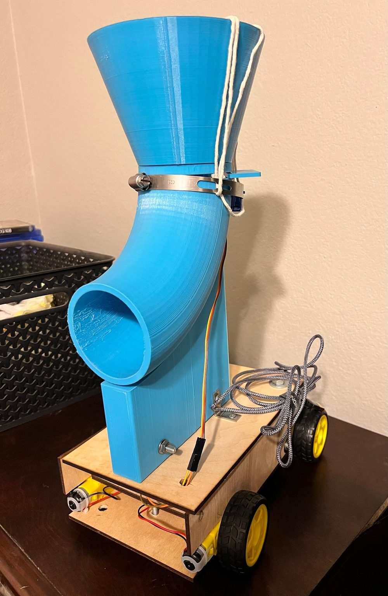
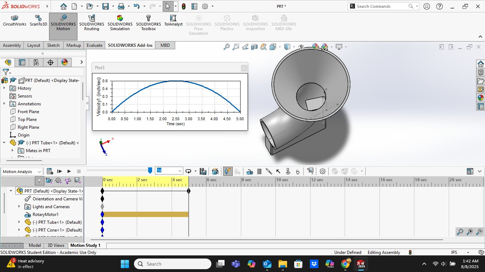
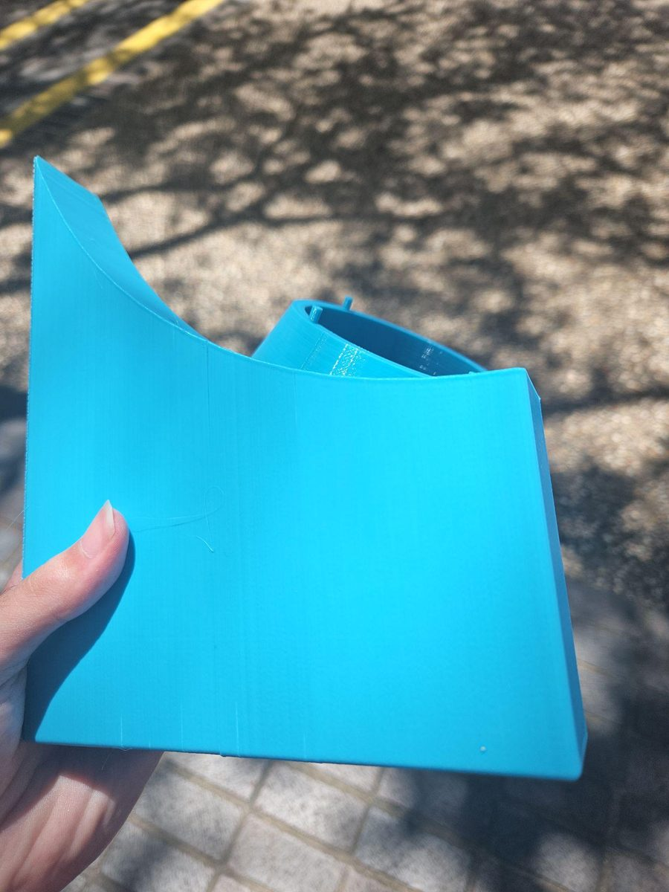
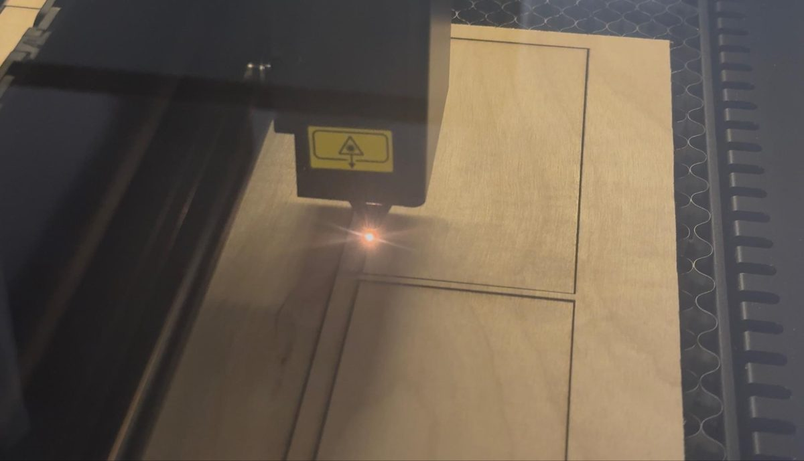
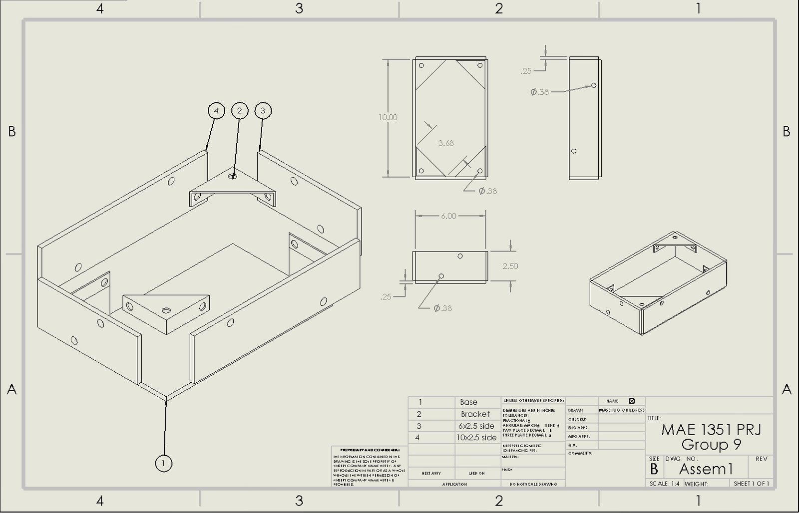
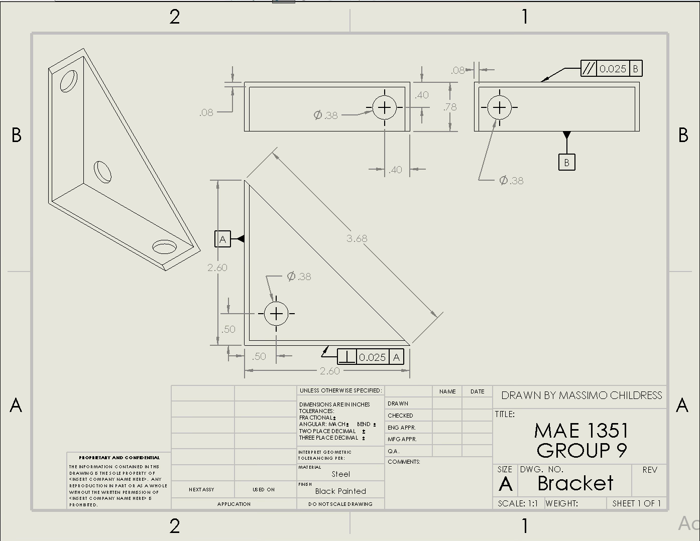

Autonomous Tennis-Ball Retrieval Vehicle
Our team built a vehicle that catches a dropped tennis ball in a funnel, drives to a designated drop-off area, and releases the ball into the target zone. This was the final design project for MAE 1351.
- Course
- MAE 1351 Intro to Engineering Design, UT Arlington
- Team
- Team 9 “Blue Bouncer” (4 students)
- Tools
- SolidWorks, motion study, 3D printing, laser cutting, Arduino
- Result
- Caught the ball and delivered it to the drop-off area
Design concept
We started from a past project shown in class: a funnel that catches the ball, a mechanism that drives forward, and a trapdoor that releases the ball into a tray. We kept that idea but made two changes:
- Placed the trapdoor higher in the funnel, which gives the ball more momentum and lets it travel further after release, so the robot can finish the task without touching the tray.
- Made the base from laser-cut wood instead of 3D printing it.


Motion study and actuator choice
A SolidWorks motion study of the trapdoor showed a smooth, controlled, slow motion: the light part has to rotate about 100° to block the ball as it falls into the funnel, then rotate back to let it out. That requirement points to a positional servo, which is small, lightweight, controlled, and accurate enough to fit the required angle and sit comfortably in the slot on the tube. We used an SG90 micro servo.

Fabrication
The funnel and tube parts were 3D printed and the base was cut from wood on a laser cutter. Parts were fastened with hardware from Home Depot (3/8″-16 × 1″ zinc-plated hex bolts, nuts and washers) plus other bolts, washers and clamps we had on hand.


Electronics and control
An Arduino Uno drives four TT gear motors through an L298N motor driver, powered by a 5×AA battery holder, and controls the SG90 servo that opens the gate. The program is a timed, open-loop sequence:
- Hold the gate closed at 90° and wait 5 s for the servo to settle.
- Drive forward at full PWM for 10.5 s (about 6 ft, tuned by testing).
- Stop, wait 2 s, then sweep the servo from 90° to 180° in 1° steps to release the ball.
View the Arduino code
#include <Servo.h>
// Motor Pins (2 motors = 1 per wheel)
const int ena = 5; // Left motor speed (PWM)
const int in1 = 6; // Left motor control 1
const int in2 = 7; // Left motor control 2
const int in3 = 8; // Right motor control 1
const int in4 = 9; // Right motor control 2
const int enb = 10; // Right motor speed (PWM)
// Servo Setup
Servo ballGateServo;
const int servoPin = 13;
const int HOLD_ANGLE = 90; // Position to hold ball
const int RELEASE_ANGLE = 180; // Position to release ball
void setup() {
// Initialize Motor Pins
pinMode(ena, OUTPUT);
pinMode(in1, OUTPUT);
pinMode(in2, OUTPUT);
pinMode(enb, OUTPUT);
pinMode(in3, OUTPUT);
pinMode(in4, OUTPUT);
// Initialize Servo
ballGateServo.attach(servoPin);
ballGateServo.write(HOLD_ANGLE); // Close gate initially
delay(5000); // Let servo stabilize
// --- MOVEMENT SEQUENCE ---
// 1. Move forward ~6 feet (adjust delay through testing)
moveForward(255); // Full speed
delay(10500);
// 2. Stop and release ball
stopMotors();
delay(2000);
releaseBall();
}
void loop() {} // Everything happens in setup()
// ---- 2-MOTOR CONTROL FUNCTIONS ----
void moveForward(int speed) {
// Left motor forward
digitalWrite(in1, LOW);
digitalWrite(in2, HIGH);
analogWrite(ena, speed);
// Right motor forward
digitalWrite(in3, HIGH);
digitalWrite(in4, LOW);
analogWrite(enb, speed);
}
void stopMotors() {
// Brake both motors
digitalWrite(in1, LOW);
digitalWrite(in2, LOW);
digitalWrite(in3, LOW);
digitalWrite(in4, LOW);
}
// ---- SERVO CONTROL ----
void releaseBall() {
for (int angle = HOLD_ANGLE; angle <= RELEASE_ANGLE; angle++) {
ballGateServo.write(angle);
delay(15); // Smooth movement
}
}Bill of materials
- Arduino Uno Rev3
- SG90 micro servo motor
- 4 × TT DC motors (3–6 V) with wheels
- L298N dual H-bridge motor driver
- 5×AA battery holder with leads
- Jumper wires
- 3D-printed parts and laser-cut wood base (all modeled in SolidWorks)
- Bolts, washers and clamps
Engineering drawings
The report includes an assembly drawing and detail drawings for every fabricated part, with GD&T.

